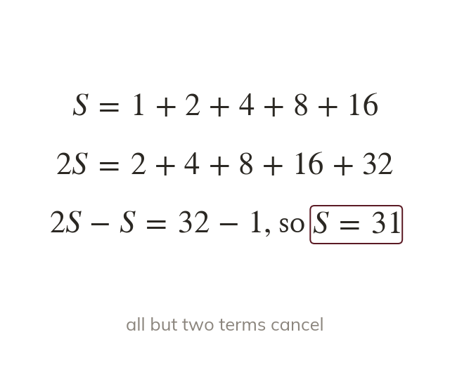
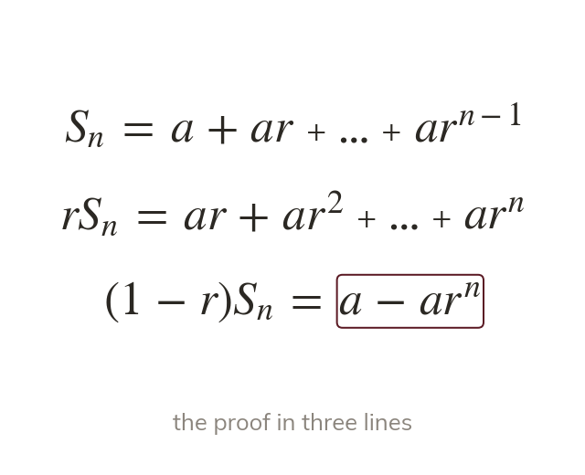
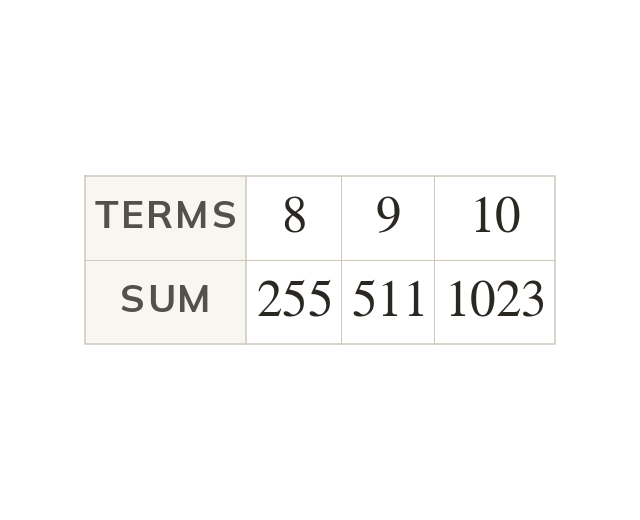
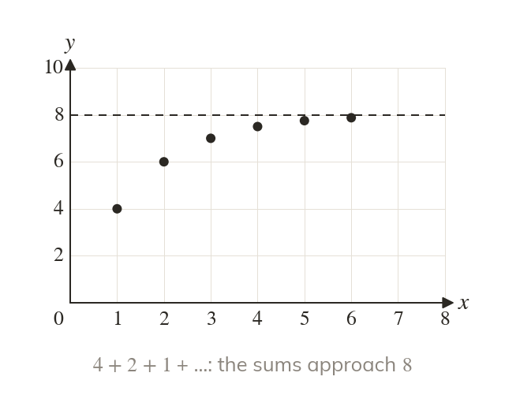
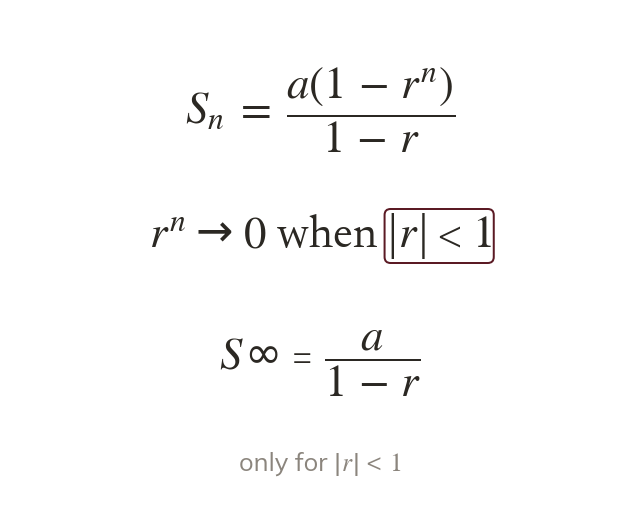
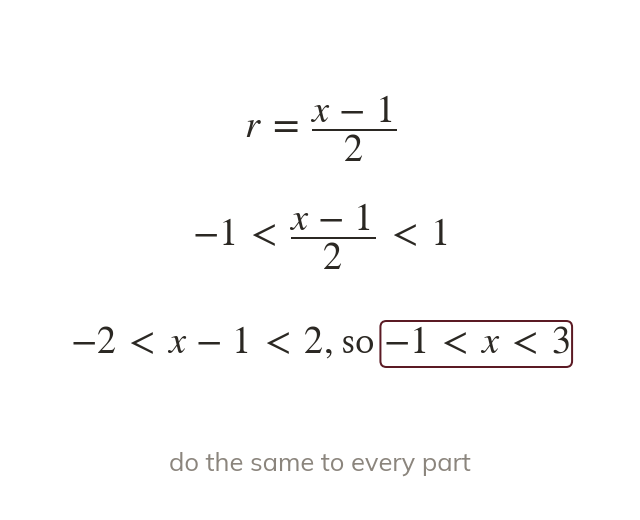

Multiply by and subtract
Multiplying a geometric series by moves every term one place along. Subtracting the two lines cancels everything except the first term and the last.
Adding a geometric series term by term is slow, and when the sum settles towards a limit even with infinitely many terms. Both formulae are used again in sigma notation in and in the savings and decay models of
Work down the page at your own pace. Write every answer in your book first, then click to check it.
Read each card, then follow the worked examples one step at a time.

Multiplying a geometric series by moves every term one place along. Subtracting the two lines cancels everything except the first term and the last.

The same subtraction in general gives - rSₙ = Factorising, for

For the least n with a sum above a value, solve the inequality with logarithms. Take care when since its logarithm is negative and turns the inequality.
Pick an answer. If it's wrong, the feedback tells you which mistake it was.
Write the blanks in your book first, then tap each one to check.
Read each card, then follow the worked examples one step at a time.

If gets closer and closer to as n grows. The sums then approach a limit, the sum to infinity.

With → the sum formula becomes For , the sum to infinity is

When contains , the series converges for
Solve that double inequality for .
Pick an answer. If it's wrong, the feedback tells you which mistake it was.
Write the blanks in your book first, then tap each one to check.
Finished? Next lesson: 13.P3.6 Sigma Notation.
For each skill, tap the one that is true for you today. Your Revise pages start with anything you mark Not yet.
Your ratings are saved on this device only.
Log in, then search for a code to practise that skill.